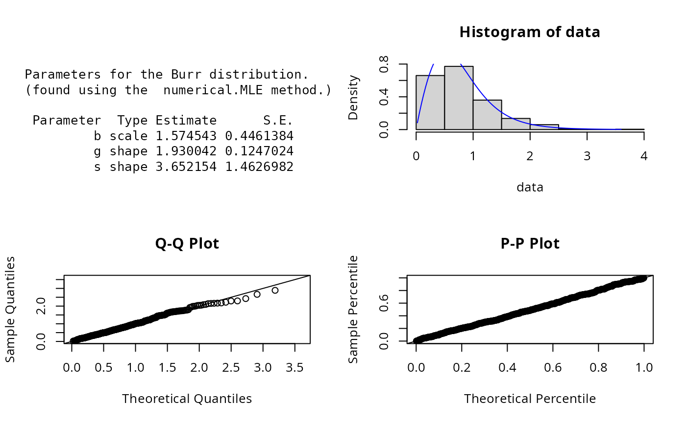
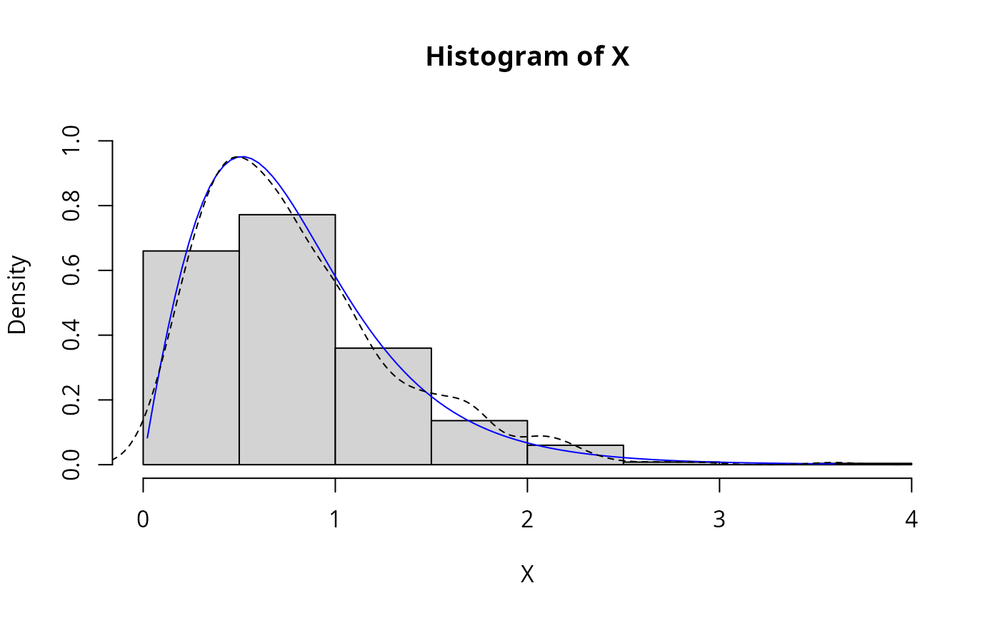

Burr.RdDensity, distribution, quantile, random number
generation, and parameter estimation functions for the Burr distribution with parameters location,
scale and inequality. Parameter estimation can be based on a weighted or unweighted i.i.d sample
and can be performed numerically.
dBurr(x, b = 1, g = 2, s = 2, params = list(b = 1, g = 2, s = 2), ...)
pBurr(q, b = 1, g = 2, s = 2, params = list(b = 1, g = 2, s = 2), ...)
qBurr(p, b = 1, g = 2, s = 2, params = list(b = 1, g = 2, s = 2), ...)
rBurr(n, b = 1, g = 2, s = 2, params = list(b = 1, g = 2, s = 2), ...)
eBurr(X, w, method = "numerical.MLE", ...)
lBurr(
X,
w,
b = 1,
g = 2,
s = 2,
params = list(b = 1, g = 2, s = 2),
logL = TRUE,
...
)A vector of quantiles.
Scale parameters.
Shape parameters.
A list that includes all named parameters.
Additional parameters.
A vector of probabilities.
Number of observations.
Sample observations.
An optional vector of sample weights.
Parameter estimation method.
logical; if TRUE, lBurr gives the log-likelihood, otherwise the likelihood is given.
dBurr gives the density, pBurr the distribution function, qBurr the quantile function, rBurr generates random deviates, and eBurr estimate the distribution parameters. lBurr provides the log-likelihood function.
The Burr distribution is a special case of the Pareto(IV) distribution
where the location parameter is equal \(0\) and inequality parameter is equal to \(1/g\), Brazauskas (2003).
The dBurr(), pBurr(), qBurr(),and rBurr() functions serve as wrappers of the
dparetoIV, pparetoIV, qparetoIV, and
rparetoIV functions in the VGAM package. They allow for the parameters to be declared not only as
individual numerical values, but also as a list so parameter estimation can be carried out.
The Burr distribution is most simply defined in terms of its cumulative distribution function (Johnson et.al p.576)
$$F(x) = [1 + (x/b)^g]^{-s}$$
where \(b\), \(g\) and \(s\) \(> 0\). Parameter estimation can only be implemented numerically.
The log-likelihood and score functions are as given by Watkins (1999) and the information matrix is as given by
Brazauskas (2003).
Johnson, N. L., Kotz, S. and Balakrishnan, N. (1994) Continuous Univariate Distributions,
volume 1, chapter 20, Wiley, New York.
Brazauskas, V. (2003) Information matrix for Pareto(IV), Burr, and related distributions. Comm. Statist.
Theory and Methods 32, 315-325.
Watkins A.J. (1999) An algorithm for maximum likelihood estimation in the three parameter Burr XII distribution,
Computational Statistics & Data Analysis, 32, 19-27.
Mathworks: Matlab documentation for Burr Type XII distribution
ExtDist for other standard distributions.
# Parameter estimation for a distribution of known shape parameters
X <- rBurr(n=500, b = 1, g = 2, s = 2)
est.par <- eBurr(X); est.par
#>
#> Parameters for the Burr distribution.
#> (found using the numerical.MLE method.)
#>
#> Parameter Type Estimate S.E.
#> b scale 0.9913072 0.1352481
#> g shape 2.1030134 0.1188590
#> s shape 1.9532374 0.3819562
#>
#>
plot(est.par)

# Fitted density curve and histogram
den.x <- seq(min(X),max(X),length=100)
den.y <- dBurr(den.x, b=est.par$b, g=est.par$g, s=est.par$s)
hist(X, breaks=10, probability=TRUE, ylim = c(0,1.1*max(den.y)))
lines(den.x, den.y, col="blue")
lines(density(X), lty=2)

# Extracting shape or scale parameters
est.par[attributes(est.par)$par.type=="scale"]
#> $b
#> [1] 0.9913072
#>
est.par[attributes(est.par)$par.type=="shape"]
#> $g
#> [1] 2.103013
#>
#> $s
#> [1] 1.953237
#>
# Parameter Estimation for a distribution with unknown shape parameters
# Example from: Matlab Statistical Toolbox package
# (See: https://au.mathworks.com/help/stats/burr-type-xii-distribution.html)
# Parameter estimates given are: b = 80.4515, g = 18.9251 and s = 0.4492.
QRS.duration <- c(91,81,138,100,88,100,77,78,84,89,102,77,78,91,77,75,82,70,91,82,83,90,71,75,82,
109,94,95,90,96,85,71,75,78,82,69,103,85,80,94,80,79,92,84,86,73,75,73,78,80,81,
83,103,92,88,77,79,90,91,83,80,78,76,82,81,80,82,71,73,87,76,101,93,90,87,88,94,
94,90,78,83,92,93,100,83,163,96,114,170,137,84,82,79,72,97,87,102,85,84,78,79,91,
98,86,72,97,82,78,97,94,82,78,79,87,93,75,106,96,88,90,74,85,90,71,75,77,87,95,
74,99,89,83,78,100,80,87,79,102,80,85,81,85,95,82,97,92,102,86,80,85,85,111,89,63,
70,92,75,93,83,84,91,81,113,92,81,74,78,80,82,95,106,95,100,90,88,71,78,77,87,79,
85,91,92,98,68,84,92,110,108,153,73,81,87,87,95,73,95,100,96,97,76,62,86,71,99,68,
90,146,86,80,90,93,91,111,89,79,77,73,92,98,78,87,98,84,82,90,85,71,84,85,77,93,
74,89,89,103,85,88,81,84,96,90,98,78,93,80,85,67,74,69,105,95,87,108,99,79,86,82,
91,93,80,84,90,81,90,78,98,81,90,85,79,61,90,79,83,84,78,86,72,87,91,102,80,82,104,
85,83,81,94,84,91,99,101,132,79,103,97,131,91,90,121,78,84,97,94,96,91,80,97,92,90,
90,123,105,85,77,83,92,85,96,69,88,84,107,91,74,89,109,80,83,92,100,113,105,99,84,
74,76,87,87,96,88,80,85,90,74,95,86,74,95,74,73,104,92,105,97,101,83,84,98,81,93,
84,102,94,91,100,92,94,98,146,84,77,82,84,76,106,70,87,118,86,82,96,89,93,82,97,
86,188,93,72,107,81,76,83,147,82,110,108,82,93,95,80,185,73,78,71,86,85,76,93,
87,96,86,78,87,80,98,75,78,82,94,83,94,140,87,55,133,83,77,123,79,88,80,88,79,
77,87,88,94,88,74,85,88,81,91,81,80,100,108,93,79)
est.par <- eBurr(QRS.duration); est.par
#>
#> Parameters for the Burr distribution.
#> (found using the numerical.MLE method.)
#>
#> Parameter Type Estimate S.E.
#> b scale 80.4515050 0.9905980
#> g shape 18.9250234 1.5944568
#> s shape 0.4492412 0.0628466
#>
#>
plot(est.par)
# log-likelihood function
lBurr(QRS.duration,param = est.par)
#> [1] -1763.305
# Evaluation of the precision of the parameter estimates by the Hessian matrix
H <- attributes(est.par)$nll.hessian
var <- solve(H)
se <- sqrt(diag(var)); se
#> b g s
#> 0.9905980 1.5944568 0.0628466